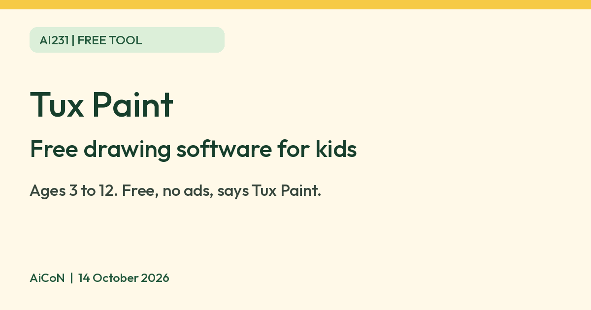

Tux Paint: free drawing software for kids, no ads
Tux Paint says it is free of cost and free of ads, and made for children ages 3 to 12. Here is what runs it, what its apps collect, and what we did not test.

Tux Paint logo
What it is
Tux Paint is a drawing program for children. Its website calls it "a free, award-winning drawing program for children ages 3 to 12" and says it is used in schools around the world. Kids get a blank canvas, drawing tools, sound effects and a cartoon mascot guide. It is not an AI tool and not an image generator. You draw it yourself. We included it because it is a free tool from an official source.
Is it free?
Yes. The Tux Paint site says: "Tux Paint is free of cost and free of advertisements" and that it is Open Source under the GNU General Public License. Its download page says it is completely free software and you can install it on as many machines as you like. We found no paid tier on the pages we read. The site asks for no account.
Which devices
- Windows 8, 10 and 11, macOS 10.10 or later, Android 5 or later (including Chromebooks that run Android apps), Linux and Haiku, per the requirements/download pages. Haiku is listed on the download page. The features page still says Windows 7 through 11, while requirements/download pages say Windows 8 and later. This guide follows the latter; check before installing on an older PC. The site says there is no native ChromeOS version.
- The base install is about 22 MB on Windows, macOS and Linux. The full set of stamps (extra pictures) adds about 233 MB, according to the requirements page.
- The download page says Android users can get it from Google Play, F-Droid, or a direct download.
- iOS: the site lists only an unofficial port called "Children Tux Paint" on the App Store. The Tux Paint site says it "is not free, and contains in-app advertisements". We did not look at that app. Tux Paint's privacy policy lists Windows, macOS, Linux, Haiku and Android releases, so it does not cover the iOS port.
Who it suits
- Young children, ages 3 to 12 per the site. Adults can use it too, the site says.
- The features page lists "Parental and Teacher Controls". We did not read what they cover.
- We found no India-specific statement on the pages we read. AiCoN advice: download only from tuxpaint.org, or the official Google Play or F-Droid listings it links to.
Privacy and data
- Tux Paint's privacy policy says the official releases for Windows, macOS, Linux, Haiku and Android "do not communicate any information online; they have no networking functionality".
- The website is different. The policy says tuxpaint.org shows Google AdSense ads, uses Google Analytics, keeps web logs for two weeks, and posts artwork in a public gallery only if you send it in. Sending a child's drawing and name to that gallery is your choice. AiCoN advice: do not send it if you want it private.
Frequently asked questions
Is Tux Paint free?
Yes. The site says it is free of cost and free of advertisements.
Does the app need internet?
The privacy policy says official releases have no networking functionality. We did not test this.
Is it AI?
No. It is a drawing program. We included it because it is a free tool from an official source.
How to start
- Open the official download page and choose your system. Check the requirements first. For Chromebooks, the site points to the Android app only on supported devices.
- Install the official package, or use your Linux distribution's package. Download extra stamps only if you want them and have enough storage.
- Open a blank canvas and try the drawing tools with an adult or teacher. AiCoN did not test installation or controls.
- Keep a child's drawing private unless you choose to submit it to the public website gallery. The website's data practices differ from the official app.
What changed since this post?
Homepage, download, requirements, features and privacy pages rechecked on 14 October 2026. Free/no-ads and ages 3-12 remain vendor statements, not AiCoN test results. Added the paid/ad-supported unofficial iOS exception and Windows 7 versus Windows 8+ source conflict. GPL-licensed penguin logo replaces the website wordmark whose reuse terms were not verified. India/store availability, installation and parental controls were not tested.
Sources: Tux Paint, Download, Requirements, Features, Privacy policy, Logo licence record, GNU GPL. Checked 14 October 2026.

Logo: Tux Paint penguin by Bill Kendrick, GPL v2 or later, via Wikimedia Commons. Independent guide, not affiliated.